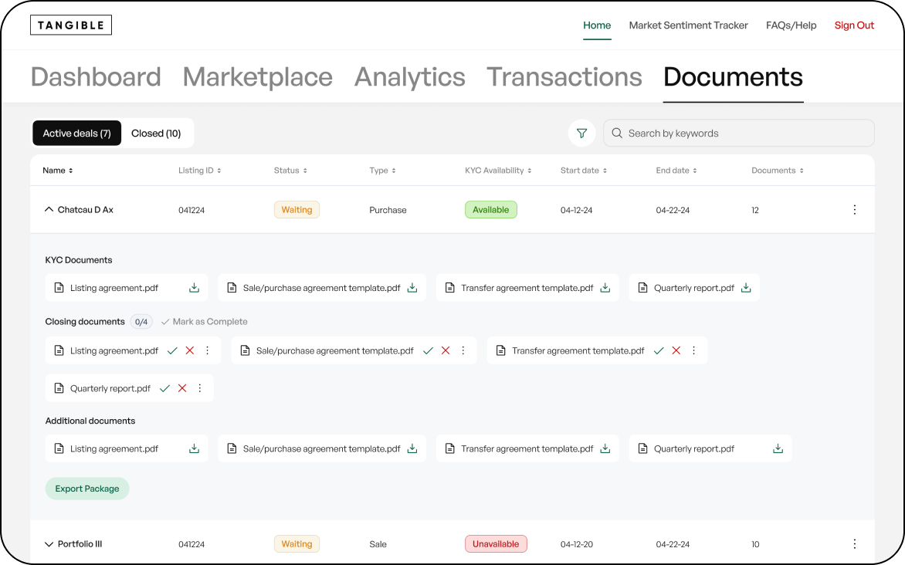

Simplifying KYC documents & approvals — a documents tab redesign for an investment platform
As part of a large B2B platform for trading investment funds, I redesigned the Documents tab. I introduced a dedicated KYC section, an approval/rejection flow with confirmation, a progress tracker, and the ability to mark sections as complete.
The key challenge was making it fast and transparent to work with a large volume of documents across four different user roles.
A platform for high-value transactions — without a proper document verification process.
On a platform where banks and funds handle multi-million transactions, there was no tool to manage KYC documents — no upload, no review, no approval flow. Compliance and Back Office teams couldn’t track document status, while Relationship Managers had no clarity on what was still missing. At this scale, it was a critical gap in both security and process transparency.
Four roles — four different ways of thinking about documents
Interviews with RMs, Compliance, and Operations revealed a key insight: each role interacts with documents differently. RMs think in terms of tasks (“what still needs to be uploaded”), Compliance focuses on risk (“can this be approved”), and Operations tracks progress (“how much is left”). An analysis of the existing interface showed that a single Documents tab failed to distinguish between document types and provided no clear signal of their status.

The key question: how to make Approve and Reject easy to access without cluttering the interface?
With a large volume of documents, the interface couldn’t turn into an endless list of buttons. At the same time, key actions had to remain easily accessible. We explored several approaches.

Both actions next to each documentAt scale, the interface quickly became cluttered. Reject, as a destructive action, shouldn’t carry the same weight as Approve.
A transparent document workflow that makes roles clear and progress easy to trackThe Documents tab evolved into a more cohesive experience through a set of interconnected improvements.
KYC Availability columnIn the listings table — an Available / Unavailable status visible at a glance, without opening each fund.
KYC Documents sectionA dedicated section within the listing, placed above Closing Documents. Only RMs can re-upload documents.
Approve / Reject flowApproval includes a confirmation modal, while rejection is handled via a 3-dot menu, with the reason shown in a tooltip and in the upload modal.
Progress tracking & Mark as CompleteA counter like “3/12” shows progress within each section. A completion button with a visual indicator allows sections to be marked as done.
Approve as the primary action, Reject via the 3-dot menuApproval is available in one click directly on the document card. Rejection is placed in a secondary menu — reducing the risk of accidental actions and signaling its severity.
Rejection reason: shown as a tooltip on the card for quick reference, with the full text available in the upload modal when submitting a new document.


Action hierarchy matters — especially in high-stakes productsWhen the cost of error is high, destructive actions should require more effort. Hiding Reject in a menu isn’t a limitation — it’s a deliberate safeguard against accidental clicks.
User roles shape the architecture, not just accessDifferent roles don’t just see different buttons — they think about the task differently. Understanding this through interviews before designing saved multiple iterations.
Dense content calls for progressive disclosureA tooltip for quickly viewing the rejection reason + full text in a modal isn’t duplication — it’s two different use cases for the same piece of information.